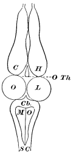
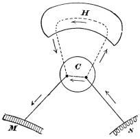
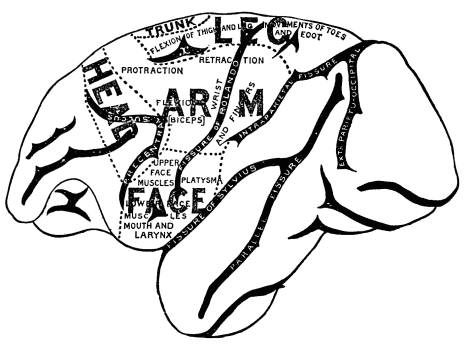
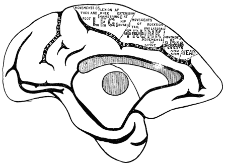
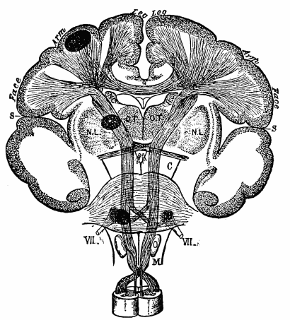
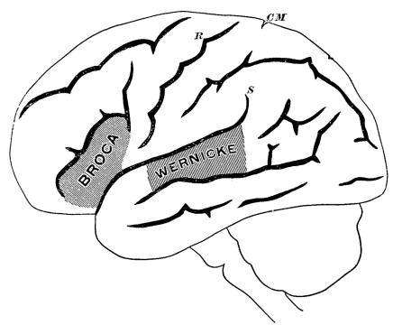
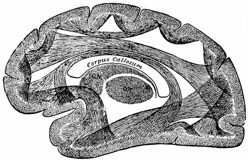
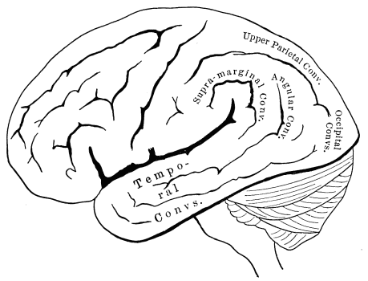
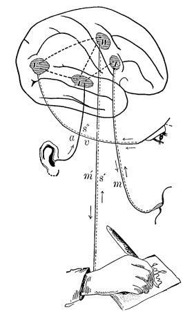

Chapter 8: The Functions of the Brain¶
8.1 The Functions of the Brain¶
General Idea of Nervous Function.—If I begin chopping the foot of a tree, its branches are unmoved by my act, and its leaves murmur as peacefully as ever in the wind. If, on the contrary, I do violence to the foot of a fellow-man, the rest of his body instantly responds to the aggression by movements of alarm or defence. The reason of this difference is that the man has a nervous system, whilst the tree has none; and the function of the nervous system is to bring each part into harmonious coöperation with every other. The afferent nerves, when excited by some physical irritant, be this as gross in its mode of operation as a chopping axe or as subtle as the waves of light, conveys the excitement to the nervous centres. The commotion set up in the centres does not stop there, but discharges through the efferent nerves, exciting movements which vary with the animal and with the irritant applied. These acts of response have usually the common character of being of service. They ward off the noxious stimulus and support the beneficial one; whilst if, in itself indifferent, the stimulus be a sign of some distant circumstance of practical importance, the animal's acts are addressed to this circumstance so as to avoid its perils or secure its benefits, as the case may be. To take a common example, if I hear the conductor calling 'All aboard!' as I enter the station, my heart first stops, then palpitates, and my legs respond to the air-waves falling on my tympanum by quickening their movements. If I stumble as I run, the sensation of falling provokes a movement of the hands towards the direction of the fall, the effect of which is to shield the body from too sudden a shock. If a cinder enter my eye, its lids close forcibly and a copious flow of tears tends to wash it out.
These three responses to a sensational stimulus differ, however, in many respects. The closure of the eye and the lachrymation are quite involuntary, and so is the disturbance of the heart. Such involuntary responses we know as 'reflex' acts. The motion of the arms to break the shock of falling may also be called reflex, since it occurs too quickly to be deliberately intended. It is, at any rate, less automatic than the previous acts, for a man might by conscious effort learn to perform it more skilfully, or even to suppress it altogether. Actions of this kind, into which instinct and volition enter upon equal terms, have been called 'semi-reflex.' The act of running towards the train, on the other hand, has no instinctive element about it. It is purely the result of education, and is preceded by a consciousness of the purpose to be attained and a distinct mandate of the will. It is a 'voluntary act.' Thus the animal's reflex and voluntary performances shade into each other gradually, being connected by acts which may often occur automatically, but may also be modified by conscious intelligence.
The Frog's Nerve-centres.—Let us now look a little more closely at what goes on.
The best way to enter the subject will be to take a lower creature, like a frog, and study by the vivisectional method the functions of his different nerve-centres. The frog's nerve-centres are figured in the diagram over the page, which needs no further explanation. I shall first proceed to state what happens when various amounts of the anterior parts are removed, in different frogs, in the way in which an ordinary student removes them—that is, with no extreme precautions as to the purity of the operation.
If, then, we reduce the frog's nervous system to the spinal cord alone, by making a section behind the base of the skull, between the spinal cord and the medulla oblongata, thereby cutting off the brain from all connection with the rest of the body, the frog will still continue to live, but with a very peculiarly modified activity. It ceases to breathe or swallow; it lies flat on its belly, and does not, like a normal frog, sit up on its forepaws, though its hind-legs are kept, as usual, folded against its body and immediately resume this position if drawn out. If thrown on its back it lies there quietly, without turning over like a normal frog. Locomotion and voice seem entirely abolished. If we suspend it by the nose, and irritate different portions of its skin by acid, it performs a set of remarkable 'defensive' movements calculated to wipe away the irritant. Thus, if the breast be touched, both fore-paws will rub it vigorously; if we touch the outer side of the elbow, the hind-foot of the same side will rise directly to the spot and wipe it. The back of the foot will rub the knee if that be attacked, whilst if the foot be cut away, the stump will make ineffectual movements, and then, in many frogs, a pause will come, as if for deliberation, succeeded by a rapid passage of the opposite unmutilated foot to the acidulated spot.

The most striking character of all these movements, after their teleological appropriateness, is their precision. They vary, in sensitive frogs and with a proper amount of irritation, so little as almost to resemble in their machine-like regularity the performances of a jumping-jack, whose legs must twitch whenever you pull the string. The spinal cord of the frog thus contains arrangements of cells and fibres fitted to convert skin-irritations into movements of defence. We may call it the centre for defensive movements in this animal. We may indeed go farther than this, and by cutting the spinal cord in various places find that its separate segments are independent mechanisms, for appropriate activities of the head and of the arms and legs respectively. The segment governing the arms is especially active, in male frogs, in the breeding season; and these members alone, with the breast and back appertaining to them, and everything else cut away, will actively grasp a finger placed between them and remain hanging to it for a considerable time.
Similarly of the medulla oblongata, optic lobes, and other centres between the spinal cord and the hemispheres of the frog. Each of them is proved by experiment to contain a mechanism for the accurate execution, in response to definite stimuli, of certain special acts. Thus with the medulla the animal swallows; with the medulla and cerebellum together he jumps, swims, and turns over from his back; with his optic lobes he croaks when pinched; etc. A frog which has lost his cerebral hemispheres alone is by an unpractised observer indistinguishable from a normal animal.
Not only is he capable, on proper instigation, of all the acts already mentioned, but he guides himself by sight, so that if an obstacle be set up between him and the light, and he be forced to move forward, he either jumps over it or swerves to one side. He manifests the sexual instinct at the proper seasons, and discriminates between male and female individuals of his own species. He is, in short, so similar in every respect to a normal frog that it would take a person very familiar with these animals to suspect anything wrong or wanting about him; but even then such a person would soon remark the almost entire absence of spontaneous motion—that is, motion unprovoked by any present incitation of sense. The continued movements of swimming, performed by the creature in the water, seem to be the fatal result of the contact of that fluid with its skin. They cease when a stick, for example, touches his hands. This is a sensible irritant towards which the feet are automatically drawn by reflex action, and on which the animal remains sitting. He manifests no hunger, and will suffer a fly to crawl over his nose unsnapped at. Fear, too, seems to have deserted him. In a word, he is an extremely complex machine whose actions, so far as they go, tend to self-preservation; but still a machine, in this sense—that it seems to contain no incalculable element. By applying the right sensory stimulus to him we are almost as certain of getting a fixed response as an organist is of hearing a certain tone when he pulls out a certain stop.
But now if to the lower centres we add the cerebral hemispheres, or if, in other words, we make an intact animal the subject of our observations, all this is changed. In addition to the previous responses to present incitements of sense, our frog now goes through long and complex acts of locomotion spontaneously, or as if moved by what in ourselves we should call an idea. His reactions to outward stimuli vary their form, too. Instead of making simple defensive movements with his hind-legs, like a headless frog, if touched; or of giving one or two leaps and then sitting still like a hemisphereless one, he makes persistent and varied efforts of escape, as if, not the mere contact of the physiologist's hand, but the notion of danger suggested by it were now his spur. Led by the feeling of hunger, too, he goes in search of insects, fish, or smaller frogs, and varies his procedure with each species of victim. The physiologist cannot by manipulating him elicit croaking, crawling up a board, swimming or stopping, at will. His conduct has become incalculable—we can no longer foretell it exactly. Effort to escape is his dominant reaction, but he may do anything else, even swell up and become perfectly passive in our hands.
Such are the phenomena commonly observed, and such the impressions which one naturally receives. Certain general conclusions follow irresistibly. First of all the following:
The acts of all the centres involve the use of the same muscles. When a brainless frog's hind-leg wipes the acid, he calls into play all the leg-muscles which a frog with his full medulla oblongata and cerebellum uses when he turns from his back to his belly. Their contractions are, however, combined differently in the two cases, so that the results vary widely. We must consequently conclude that specific arrangements of cells and fibres exist in the cord for wiping, in the medulla for turning over, etc. Similarly they exist in the thalami for jumping over seen obstacles and for balancing the moved body; in the optic lobes for creeping backwards, or what not. But in the hemispheres, since the presence of these organs brings no new elementary form of movement with it, but only determines differently the occasions on which the movements shall occur, making the usual stimuli less fatal and machine-like, we need suppose no such machinery directly coördinative of muscular contractions to exist. We may rather assume, when the mandate for a wiping-movement is sent forth by the hemispheres, that a current goes straight to the wiping-arrangement in the spinal cord, exciting this arrangement as a whole. Similarly, if an intact frog wishes to jump, all he need do is to excite from the hemispheres the jumping-centre in the thalami or wherever it may be, and the latter will provide for the details of the execution. It is like a general ordering a colonel to make a certain movement, but not telling him how it shall be done.
The same muscle, then, is repeatedly represented at different heights; and at each it enters into a different combination with other muscles to coöperate in some special form of concerted movement. At each height the movement is discharged by some particular form of sensorial stimulus, whilst the stimuli which discharge the hemispheres would seem not so much to be elementary sorts of sensation, as groups of sensations forming determinate objects or things.
The Pigeon's Lower Centres.—The results are just the same if, instead of a frog, we take a pigeon, cut out his hemispheres carefully and wait till he recovers from the operation. There is not a movement natural to him which this brainless bird cannot execute; he seems, too, after some days to execute movements from some inner irritation, for he moves spontaneously. But his emotions and instincts exist no longer. In Schrader's striking words:
"The hemisphereless animal moves in a world of bodies which ... are all of equal value for him.... He is, to use Goltz's apt expression, impersonal.... Every object is for him only a space-occupying mass, he turns out of his path for an ordinary pigeon no otherwise than for a stone. He may try to climb over both. All authors agree that they never found any difference, whether it was an inanimate body, a cat, a dog, or a bird of prey which came in their pigeon's way. The creature knows neither friends nor enemies, in the thickest company it lives like a hermit. The languishing cooing of the male awakens no more impression than the rattling of the peas, or the call-whistle which in the days before the injury used to make the birds hasten to be fed. Quite as little as the earlier observers have I seen hemisphereless she-birds answer the courting of the male. A hemisphereless male will coo all day long and show distinct signs of sexual excitement, but his activity is without any object, it is entirely indifferent to him whether the she-bird be there or not. If one is placed near him, he leaves her unnoticed.... As the male pays no attention to the female, so she pays none to her young. The brood may follow the mother ceaselessly calling for food, but they might as well ask it from a stone.... The hemisphereless pigeon is in the highest degree tame, and fears man as little as cat or bird of prey."
General Notion of Hemispheres.—All these facts lead us, when we try to formulate them broadly, to some such conception as this: The lower centres act from present sensational stimuli alone; the hemispheres act from considerations, the sensations which they may receive serving only as suggesters of these. But what are considerations but expectations, in the fancy, of sensations which will be felt one way or another according as action takes this course or that? If I step aside on seeing a rattlesnake, from considering how dangerous an animal he is, the mental materials which constitute my prudential reflection are images more or less vivid of the movement of his head, of a sudden pain in my leg, of a state of terror, a swelling of the limb, a chill, delirium, death, etc., etc., and the ruin of my hopes. But all these images are constructed out of my past experiences. They are reproductions of what I have felt or witnessed. They are, in short, remote sensations; and the main difference between the hemisphereless animal and the whole one may be concisely expressed by saying that the one obeys absent, the other only present, objects.
The hemispheres would then seem to be the chief seat of memory. Vestiges of past experience must in some way be stored up in them, and must, when aroused by present stimuli, first appear as representations of distant goods and evils; and then must discharge into the appropriate motor channels for warding off the evil and securing the benefits of the good. If we liken the nervous currents to electric currents, we can compare the nervous system, C, below the hemispheres to a direct circuit from sense-organ to muscle along the line S ...C ...M of Fig. 40. The hemisphere, H, adds the long circuit or loop-line through which the current may pass when for any reason the direct line is not used.

Thus, a tired wayfarer on a hot day throws himself on the damp earth beneath a maple-tree. The sensations of delicious rest and coolness pouring themselves through the direct line would naturally discharge into the muscles of complete extension: he would abandon himself to the dangerous repose. But the loop-line being open, part of the current is drafted along it, and awakens rheumatic or catarrhal reminiscences, which prevail over the instigations of sense, and make the man arise and pursue his way to where he may enjoy his rest more safely. Presently we shall examine the manner in which the hemispheric loop-line may be supposed to serve as a reservoir for such reminiscences as these. Meanwhile I will ask the reader to notice some corollaries of its being such a reservoir.
First, no animal without it can deliberate, pause, postpone, nicely weigh one motive against another, or compare. Prudence, in a word, is for such a creature an impossible virtue. Accordingly we see that nature removes those functions in the exercise of which prudence is a virtue from the lower centres and hands them over to the cerebrum. Wherever a creature has to deal with complex features of the environment, prudence is a virtue. The higher animals have so to deal; and the more complex the features, the higher we call the animals. The fewer of his acts, then, can such an animal perform without the help of the organs in question. In the frog many acts devolve wholly on the lower centres; in the bird fewer; in the rodent fewer still; in the dog very few indeed; and in apes and men hardly any at all.
The advantages of this are obvious. Take the prehension of food as an example and suppose it to be a reflex performance of the lower centres. The animal will be condemned fatally and irresistibly to snap at it whenever presented, no matter what the circumstances may be; he can no more disobey this prompting than water can refuse to boil when a fire is kindled under the pot. His life will again and again pay the forfeit of his gluttony. Exposure to retaliation, to other enemies, to traps, to poisons, to the dangers of repletion, must be regular parts of his existence. His lack of all thought by which to weigh the danger against the attractiveness of the bait, and of all volition to remain hungry a little while longer, is the direct measure of his lowness in the mental scale. And those fishes which, like our cunners and sculpins, are no sooner thrown back from the hook into the water than they automatically seize the hook again, would soon expiate the degradation of their intelligence by the extinction of their type, did not their extraordinary fecundity atone for their imprudence. Appetite and the acts it prompts have consequently become in all higher vertebrates functions of the cerebrum. They disappear when the physiologist's knife has left the subordinate centres alone in place. The brainless pigeon will starve though left on a corn-heap.
Take again the sexual function. In birds this devolves exclusively upon the hemispheres. When these are shorn away the pigeon pays no attention to the billings and cooings of its mate. It is the same, according to Goltz, with male dogs who have suffered large losses of cerebral tissue. Those who have read Darwin's Descent of Man will recollect what an importance this author ascribes to the agency of sexual selection in the amelioration of the breeds of birds. The females are naturally coy, and their coyness must be overcome by the exhibition of the gorgeous plumage, and various accomplishments in the way of strutting and fighting, of the males. In frogs and toads, on the other hand, where (as we saw on page 94) the sexual instinct devolves upon the lower centres, we find a machine-like obedience to the present incitements of sense, and an almost total exclusion of the power of choice. The consequence is that every spring an immense waste of batrachian life, involving numbers of adult animals and innumerable eggs, takes place from no other cause than the blind character of the sexual impulse in these creatures.
No one need be told how dependent all human social elevation is upon the prevalence of chastity. Hardly any factor measures more than this the difference between civilization and barbarism. Physiologically interpreted, chastity means nothing more than the fact that present solicitations of sense are overpowered by suggestions of æsthetic and moral fitness which the circumstances awaken in the cerebrum; and that upon the inhibitory or permissive influence of these alone action directly depends.
Within the psychic life due to the cerebrum itself the same general distinction obtains, between considerations of the more immediate and considerations of the more remote. In all ages the man whose determinations are swayed by reference to the most distant ends has been held to possess the highest intelligence. The tramp who lives from hour to hour; the bohemian whose engagements are from day to day; the bachelor who builds but for a single life; the father who acts for another generation; the patriot who thinks of a whole community and many generations; and, finally, the philosopher and saint whose cares are for humanity and for eternity,—these range themselves in an unbroken hierarchy, wherein each successive grade results from an increased manifestation of the special form of action by which the cerebral centres are distinguished from all below them.
The Automaton-Theory.—In the 'loop-line' along which the memories and ideas of the distant are supposed to lie, the action, so far as it is a physical process, must be interpreted after the type of the action in the lower centres. If regarded here as a reflex process, it must be reflex there as well. The current in both places runs out into the muscles only after it has first run in; but whilst the path by which it runs out is determined in the lower centres by reflections few and fixed amongst the cell-arrangements, in the hemispheres the reflections are many and instable. This, it will be seen, is only a difference of degree and not of kind, and does not change the reflex type. The conception of all action as conforming to this type is the fundamental conception of modern nerve-physiology. This conception, now, has led to two quite opposite theories about the relation to consciousness of the nervous functions. Some authors, finding that the higher voluntary functions seem to require the guidance of feeling, conclude that over the lowest reflexes some such feeling also presides, though it may be a feeling connected with the spinal cord, of which the higher conscious self connected with the hemispheres remains unconscious. Others, finding that reflex and semi-automatic acts may, notwithstanding their appropriateness, take place with an unconsciousness apparently complete, fly to the opposite extreme and maintain that the appropriateness even of the higher voluntary actions connected with the hemispheres owes nothing to the fact that consciousness attends them. They are, according to these writers, results of physiological mechanism pure and simple.
To comprehend completely this latter doctrine one should apply it to examples. The movements of our tongues and pens, the flashings of our eyes in conversation, are of course events of a physiological order, and as such their causal antecedents may be exclusively mechanical. If we knew thoroughly the nervous system of Shakespeare, and as thoroughly all his environing conditions, we should be able, according to the theory of automatism, to show why at a given period of his life his hand came to trace on certain sheets of paper those crabbed little black marks which we for shortness' sake call the manuscript of Hamlet. We should understand the rationale of every erasure and alteration therein, and we should understand all this without in the slightest degree acknowledging the existence of the thoughts in Shakespeare's mind. The words and sentences would be taken, not as signs of anything beyond themselves, but as little outward facts, pure and simple. In like manner, the automaton-theory affirms, we might exhaustively write the biography of those two hundred pounds, more or less, of warmish albuminoid matter called Martin Luther, without ever implying that it felt.
But, on the other hand, nothing in all this could prevent us from giving an equally complete account of either Luther's or Shakespeare's spiritual history, an account in which every gleam of thought and emotion should find its place. The mind-history would run alongside of the body-history of each man, and each point in the one would correspond to, but not react upon, a point in the other. So the melody floats from the harp-string, but neither checks nor quickens its vibrations; so the shadow runs alongside the pedestrian, but in no way influences his steps.
As a mere conception, and so long as we confine our view to the nervous centres themselves, few things are more seductive than this radically mechanical theory of their action. And yet our consciousness is there, and has in all probability been evolved, like all other functions, for a use—it is to the highest degree improbable a priori that it should have no use. Its use seems to be that of selection; but to select, it must be efficacious. States of consciousness which feel right are held fast to; those which feel wrong are checked. If the 'holding' and the 'checking' of the conscious states severally mean also the efficacious reinforcing or inhibiting of the correlated neural processes, then it would seem as if the presence of the states of mind might help to steer the nervous system and keep it in the path which to the consciousness seemed best. Now on the average what seems best to consciousness is really best for the creature. It is a well-known fact that pleasures are generally associated with beneficial, pains with detrimental, experiences. All the fundamental vital processes illustrate this law. Starvation; suffocation; privation of food, drink, and sleep; work when exhausted; burns, wounds, inflammation; the effects of poison, are as disagreeable as filling the hungry stomach, enjoying rest and sleep after fatigue, exercise after rest, and a sound skin and unbroken bones at all times, are pleasant. Mr. Spencer and others have suggested that these coincidences are due, not to any preëstablished harmony, but to the mere action of natural selection, which would certainly kill off in the long-run any breed of creatures to whom the fundamentally noxious experience seemed enjoyable. An animal that should take pleasure in a feeling of suffocation would, if that pleasure were efficacious enough to make him keep his head under water, enjoy a longevity of four or five minutes. But if conscious pleasure does not reinforce, and conscious pain does not inhibit, anything, one does not see (without some such a priori rational harmony as would be scouted by the 'scientific' champions of the automaton-theory) why the most noxious acts, such as burning, might not with perfect impunity give thrills of delight, and the most necessary ones, such as breathing, cause agony. The only considerable attempt that has been made to explain the distribution of our feelings is that of Mr. Grant Allen in his suggestive little work, Physiological Æsthetics; and his reasoning is based exclusively on that causal efficacy of pleasures and pains which the partisans of pure automatism so strenuously deny.
Probability and circumstantial evidence thus run dead against the theory that our actions are purely mechanical in their causation. From the point of view of descriptive Psychology (even though we be bound to assume, as on p. 6, that all our feelings have brain-processes for their condition of existence, and can be remotely traced in every instance to currents coming from the outer world) we have no clear reason to doubt that the feelings may react so as to further or to dampen the processes to which they are due. I shall therefore not hesitate in the course of this book to use the language of common-sense. I shall talk as if consciousness kept actively pressing the nerve-centres in the direction of its own ends, and was no mere impotent and paralytic spectator of life's game.
The Localization of Functions in the Hemispheres.—The hemispheres, we lately said, must be the organ of memory, and in some way retain vestiges of former currents, by means of which mental considerations drawn from the past may be aroused before action takes place. The vivisections of physiologists and the observations of physicians have of late years given a concrete confirmation to this notion which the first rough appearances suggest. The various convolutions have had special functions assigned to them in relation to this and that sense-organ, as well as to this or that portion of the muscular system. This book is no place for going over the evidence in detail, so I will simply indicate the conclusions which are most probable at the date of writing.
Mental and Cerebral Elements.—In the first place, there is a very neat parallelism between the analysis of brain-functions by the physiologists and that of mental functions by the 'analytic' psychologists.
The phrenological brain-doctrine divided the brain into 'organs,' each of which stood for the man in a certain partial attitude. The organ of 'Philoprogenitiveness,' with its concomitant consciousness, is an entire man so far as he loves children, that of 'Reverence' is an entire man worshipping, etc. The spiritualistic psychology, in turn, divided the Mind into 'faculties,' which were also entire mental men in certain limited attitudes. But 'faculties' are not mental elements any more than 'organs' are brain-elements. Analysis breaks both into more elementary constituents.
Brain and mind alike consist of simple elements, sensory and motor. "All nervous centres," says Dr. Hughlings Jackson, "from the lowest to the very highest (the substrata of consciousness), are made up of nothing else than nervous arrangements, representing impressions and movements.... I do not see of what other materials the brain can be made." Meynert represents the matter similarly when he calls the cortex of the hemispheres the surface of projection for every muscle and every sensitive point of the body. The muscles and the sensitive points are represented each by a cortical point, and the Brain is little more than the sum of all these cortical points, to which, on the mental side, as many sensations and ideas correspond. The sensations and ideas of sensation and of motion are, in turn, the elements out of which the Mind is built according to the analytic school of psychology. The relations between objects are explained by 'associations' between the ideas; and the emotional and instinctive tendencies, by associations between ideas and movements. The same diagram can symbolize both the inner and the outer world; dots or circles standing indifferently for cells or ideas, and lines joining them, for fibres or associations. The associationist doctrine of 'ideas' may be doubted to be a literal expression of the truth, but it probably will always retain a didactic usefulness. At all events, it is interesting to see how well physiological analysis plays into its hands. To proceed to details.

The Motor Region.—The one thing which is perfectly well established is this, that the 'central' convolutions, on either side of the fissure of Rolando, and (at least in the monkey) the calloso-marginal convolution (which is continuous with them on the mesial surface where one hemisphere is applied against the other), form the region by which all the motor incitations which leave the cortex pass out, on their way to those executive centres in the region of the pons, medulla, and spinal cord from which the muscular contractions are discharged in the last resort. The existence of this so-called 'motor zone' is established by anatomical as well as vivisectional and pathological evidence.
The accompanying figures (Figs. 41 and 42), from Schaefer and Horsley, show the topographical arrangement of the monkey's motor zone more clearly than any description.

Fig. 43, after Starr, shows how the fibres run downwards. All sensory currents entering the hemispheres run out from the Rolandic region, which may thus be regarded as a sort of funnel of escape, which narrows still more as it plunges beneath the surface, traversing the inner capsule, pons, and parts below. The dark ellipses on the left half of the diagram stand for hemorrhages or tumors, and the reader can easily trace, by following the course of the fibres, what the effect of them in interrupting motor currents may be.

One of the most instructive proofs of motor localization in the cortex is that furnished by the disease now called aphemia, or motor aphasia. Motor aphasia is neither loss of voice nor paralysis of the tongue or lips. The patient's voice is as strong as ever, and all the innervations of his hypoglossal and facial nerves, except those necessary for speaking, may go on perfectly well. He can laugh and cry, and even sing; but he either is unable to utter any words at all; or a few meaningless stock phrases form his only speech; or else he speaks incoherently and confusedly,

mispronouncing, misplacing, and misusing his words in various degrees. Sometimes his speech is a mere broth of unintelligible syllables. In cases of pure motor aphasia the patient recognizes his mistakes and suffers acutely from them. Now whenever a patient dies in such a condition as this, and an examination of his brain is permitted, it is found that the lowest frontal gyrus (see Fig. 44) is the seat of injury. Broca first noticed this fact in 1861, and since then the gyrus has gone by the name of Broca's convolution. The injury in right-handed people is found on the left hemisphere, and in left-handed people on the right hemisphere. Most people, in fact, are left-brained, that is, all their delicate and specialized movements are handed over to the charge of the left hemisphere. The ordinary right-handedness for such movements is only a consequence of that fact, a consequence which shows outwardly on account of that extensive crossing of the fibres from the left hemisphere to the right half of the body only, which is shown in Fig. 41, below the letter M. But the left-brainedness might exist and not show outwardly. This would happen wherever organs on both sides of the body could be governed by the left hemisphere; and just such a case seems offered by the vocal organs, in that highly delicate and special motor service which we call speech. Either hemisphere can innervate them bilaterally, just as either seems able to innervate bilaterally the muscles of the trunk, ribs, and diaphragm. Of the special movements of speech, however, it would appear (from these very facts of aphasia) that the left hemisphere in most persons habitually takes exclusive charge. With that hemisphere thrown out of gear, speech is undone; even though the opposite hemisphere still be there for the performance of less specialized acts, such as the various movements required in eating.
The visual centre is in the occipital lobes. This also is proved by all the three kinds of possible evidence. It seems that the fibres from the left halves of both retinæ go to the left hemisphere, those from the right half to the right hemisphere. The consequence is that when the right occipital lobe, for example, is injured, 'hemianopsia' results in both eyes, that is, both retinæ grow blind as to their right halves, and the patient loses the leftward half of his field of view. The diagram on p. 111 will make this matter clear (see Fig. 45).
Quite recently, both Schaefer and Munk, in studying the movements of the eyeball produced by galvanizing the visual cortex in monkeys and dogs, have found reason to plot out an analogous correspondence between the upper and lower portions of the retinæ and certain parts of the visual cortex. If both occipital lobes were destroyed, we should have double hemiopia, or, in other words, total blindness. In human hemiopic blindness there is insensibility to light on one half of the field of view, but
![Fig. 45. —Scheme of the mechanism of vision, after Seguin. The cuneus convolution ( Cu ) of the right occipital lobe is supposed to be injured, and all the parts which lead to it are darkly shaded to show that they fail to exert their function. F.O. are the intra-hemispheric optical fibres. P.O.C. is the region of the lower optic centres (corpora geniculata and quadrigemina). T.O.D. is the right optic tract; C , the chiasma; F.L.D. are the fibres going to the lateral or temporal half T of the right retina, and F.C.S. are those going to the central or nasal half of the left retina. O.D. is the right, and O.S. the left, eyeball. The rightward half of each is therefore blind; in other words, the right nasal field, R.N.F. , and the left temporal field, L.T.F. , have become invisible to the subject with the lesion at Cu .](img/i-111-sml.png)
mental images of visible things remain. In double hemiopia there is every reason to believe that not only the sensation of light must go, but that all memories and images of a visual order must be annihilated also. The man loses his visual 'ideas.' Only 'cortical' blindness can produce this effect on the ideas. Destruction of the retinæ or of the visual tracts anywhere between the cortex and the eyes impairs the retinal sensibility to light, but not the power of visual imagination.

Mental Blindness.—A most interesting effect of cortical disorder is mental blindness. This consists not so much in insensibility to optical impressions, as in inability to understand them. Psychologically it is interpretable as loss of associations between optical sensations and what they signify; and any interruption of the paths between the optic centres and the centres for other ideas ought to bring it about. Thus, printed letters of the alphabet, or words, signify both certain sounds and certain articulatory movements. But the connection between the articulating or auditory centres and those for sight being ruptured, we ought a priori to expect that the sight of words would fail to awaken the idea of their sound, or of the movement for pronouncing them. We ought, in short, to have alexia, or inability to read: and this is just what we do have as a complication of aphasic disease in many cases of extensive injury about the fronto-temporal regions.
Where an object fails to be recognized by sight, it often happens that the patient will recognize and name it as soon as he touches it with his hand. This shows in an interesting way how numerous are the incoming paths which all end by running out of the brain through the channel of speech. The hand-path is open, though the eye-path be closed. When mental blindness is most complete, neither sight, touch, nor sound avails to steer the patient, and a sort of dementia which has been called asymbolia or apraxia is the result. The commonest articles are not understood. The patient will put his breeches on one shoulder and his hat upon the other, will bite into the soap and lay his shoes on the table, or take his food into his hand and throw it down again, not knowing what to do with it, etc. Such disorder can only come from extensive brain-injury.
The centre for hearing is situated in man in the upper convolution of the temporal lobe (see the part marked 'Wernicke' in Fig. 44). The phenomena of aphasia show this. We studied motor aphasia a few pages back; we must now consider sensory aphasia. Our knowledge of aphasia has had three stages: we may talk of the period of Broca, the period of Wernicke, and the period of Charcot. What Broca's discovery was we have seen. Wernicke was the first to discriminate those cases in which the patient can not even understand speech from those in which he can understand, only not talk; and to ascribe the former condition to lesion of the temporal lobe. The condition in question is word-deafness, and the disease is auditory aphasia. The latest statistical survey of the subject is that by Dr. Allen Starr. In the seven cases of pure word-deafness which he has collected (cases in which the patient could read, talk, and write, but not understand what was said to him), the lesion was limited to the first and second temporal convolutions in their posterior two thirds. The lesion (in right-handed, i.e. left-brained, persons) is always on the left side, like the lesion in motor aphasia. Crude hearing would not be abolished, even were the left centre for it utterly destroyed; the right centre would still provide for that. But the linguistic use of hearing appears bound up with the integrity of the left centre more or less exclusively. Here it must be that words heard enter into association with the things which they represent, on the one hand, and with the movements necessary for pronouncing them, on the other. In most of us (as Wernicke said) speech must go on from auditory cues; that is, our visual, tactile, and other ideas probably do not innervate our motor centres directly, but only after first arousing the mental sound of the words. This is the immediate stimulus to articulation; and where the possibility of this is abolished by the destruction of its usual channel in the left temporal lobe, the articulation must suffer. In the few cases in which the channel is abolished with no bad effect on speech we must suppose an idiosyncrasy. The patient must innervate his speech-organs either from the corresponding portion of the other hemisphere or directly from the centres of vision, touch, etc., without leaning on the auditory region. It is the minuter analysis of such individual differences as these which constitutes Charcot's contribution towards clearing up the subject.
Every namable thing has numerous properties, qualities, or aspects. In our minds the properties together with the name form an associated group. If different parts of the brain are severally concerned with the several properties, and a farther part with the hearing, and still another with the uttering, of the name, there must inevitably be brought about (through the law of association which we shall later study) such a connection amongst all these brain-parts that the activity of any one of them will be likely to awaken the activity of all the rest. When we are talking whilst we think, the ultimate process is utterance. If the brain-part for that be injured, speech is impossible or disorderly, even though all the other brain-parts be intact: and this is just the condition of things which, on p. 109, we found to be brought about by lesion of the convolution of Broca. But back of that last act various orders of succession are possible in the associations of a talking man's ideas. The more usual order is, as aforesaid, from the tactile, visual, or other properties of the things thought-about to the sound of their names, and then to the latter's utterance. But if in a certain individual's mind the look of an object or the look of its name be what habitually precedes articulation, then the loss of the hearing centre will pro tanto not affect that individual's speech or reading. He will be mentally deaf, i.e. his understanding of the human voice will suffer, but he will not be aphasic. In this way it is possible to explain the seven cases of word-deafness without motor aphasia which figure in Dr. Starr's table.
If this order of association be ingrained and habitual in that individual, injury to his visual centres will make him not only word-blind, but aphasic as well. His speech will become confused in consequence of an occipital lesion. Naunyn, consequently, plotting out on a diagram of the hemisphere the 71 irreproachably reported cases of aphasia which he was able to collect, finds that the lesions concentrate themselves in three places: first, on Broca's centre; second, on Wernicke's; third, on the supra-marginal and angular convolutions under which those fibres pass which connect the visual centres with the rest of the brain (see Fig. 47, p. 116). With this result Dr. Starr's analysis of purely sensory cases agrees.
In the chapter on Imagination we shall return to these differences in the sensory spheres of different individuals. Meanwhile few things show more beautifully than the history of our knowledge of aphasia how the sagacity and patience of many banded workers are in time certain to analyze the darkest confusion into an orderly display. There is no 'organ' of Speech in the brain any more than there is a 'faculty' of Speech in the mind. The entire mind and the entire brain are more or less at work in a man who uses language. The subjoined diagram, from Ross, shows the four parts most vitally concerned, and, in the light of our text, needs no farther explanation (see Fig. 48, p. 117).

Centres for Smell, Taste, and Touch.—The other sensory centres are less definitely made out. Of smell and taste I will say nothing; and of muscular and cutaneous feeling only this, that it seems most probably seated in the motor zone, and possibly in the convolutions immediately backwards and midwards thereof. The incoming tactile currents must enter the cells of this region by one set of fibres, and the discharges leave them by another, but of these

Conclusion.—We thus see the postulate of Meynert and Jackson, with which we started on p. 105, to be on the whole most satisfactorily corroborated by objective research. The highest centres do probably contain nothing but arrangements for representing impressions and movements, and other arrangements for coupling the activity of these arrangements together. Currents pouring in from the sense-organs first excite some arrangements, which in turn excite others, until at last a discharge downwards of some sort occurs. When this is once clearly grasped there remains little ground for asking whether the motor zone is exclusively motor, or sensitive as well. The whole cortex, inasmuch as currents run through it, is both. All the currents probably have feelings going with them, and sooner or later bring movements about. In one aspect, then, every centre is afferent, in another efferent, even the motor cells of the spinal cord having these two aspects inseparably conjoined. Marique, and Exner and Paneth have shown that by cutting round a 'motor' centre and so separating it from the influence of the rest of the cortex, the same disorders are produced as by cutting it out, so that it is really just what I called it, only the funnel through which the stream of innervation, starting from elsewhere, escapes; consciousness accompanying the stream, and being mainly of things seen if the stream is strongest occipitally, of things heard if it is strongest temporally, of things felt, etc., if the stream occupies most intensely the 'motor zone.' It seems to me that some broad and vague formulation like this is as much as we can safely venture on in the present state of science—so much at least is not likely to be overturned. But it is obvious how little this tells us of the detail of what goes on in the brain when a certain thought is before the mind. The general forms of relation perceived between things, as their identities, likenesses, or contrasts; the forms of the consciousness itself, as effortless or perplexed, attentive or inattentive, pleasant or disagreeable; the phenomena of interest and selection, etc., etc., are all lumped together as effects correlated with the currents that connect one centre with another. Nothing can be more vague than such a formula. Moreover certain portions of the brain, as the lower frontal lobes, escape formulational together. Their destruction gives rise to no local trouble of either motion or sensibility in dogs, and in monkeys neither stimulation nor excision of these lobes produces any symptoms whatever. One monkey of Horsley and Schaefer's was as tame, and did certain tricks as well, after as before the operation.
It is in short obvious that our knowledge of our mental states infinitely exceeds our knowledge of their concomitant cerebral conditions. Without introspective analysis of the mental elements of speech, the doctrine of Aphasia, for instance, which is the most brilliant jewel in Physiology, would have been utterly impossible. Our assumption, therefore (p. 5), that mind-states are absolutely dependent on brain-conditions, must still be understood as a mere postulate. We may have a general faith that it must be true, but any exact insight as to how it is true lags wofully behind.
Before taking up the study of conscious states properly so called, I will in a separate chapter speak of two or three aspects of brain-function which have a general importance and which coöperate in the production of all our mental states.